MINECRAFT BEDROCK ADDON
8丁の銃と、動く的と、当てるための細かい工夫。
アサルトライフルからスナイパー、ショットガン、火縄銃まで、8種類の銃を追加するアドオンです。一人称・三人称ともに銃を構える動き、撃つ動き、リロードの動きがあり、しゃがむとのぞきこんで狙えます。
動いている相手にも当てやすいように、細かく調整してあります。
| 銃 | ダメージ | RPM | TTK | 装弾数 |
|---|---|---|---|---|
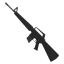 M16アサルトライフル | 3.8 | 400 | 0.75秒 | 30 |
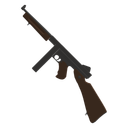 M1928A1サブマシンガン | 3.1 | 600 | 0.6秒 | 20 |
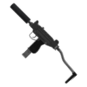 UZI(silencer)サブマシンガン | 2.5 | 900 | 0.45秒 | 25 |
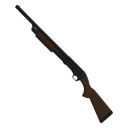 Model 37ショットガン | 1.9×12 | 67 | 1発 | 5 |
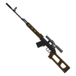 SVDスナイパーライフル | 8.1 | 200 | 0.6秒 | 10 |
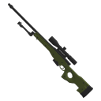 L96A1スナイパーライフル | 31.3 | 41 | 1発 | 5 |
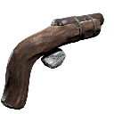 エオカ手作り散弾銃（不発あり） | 3.1×8 | 67 | 1発 | 1 |
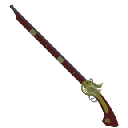 火縄銃しゃがむと三千世界（5丁撃ち） | 6.3 | 44 | 4.05秒 | 10 |
TTKは体力20の相手の体に当て続けて倒すまでの時間です（ヘッドショット、距離による減衰は入れていません。ショットガンは全ペレット命中時）。同じ数字は、ゲーム内でも銃の名前の下に表示されます。
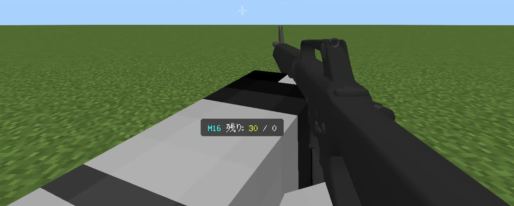
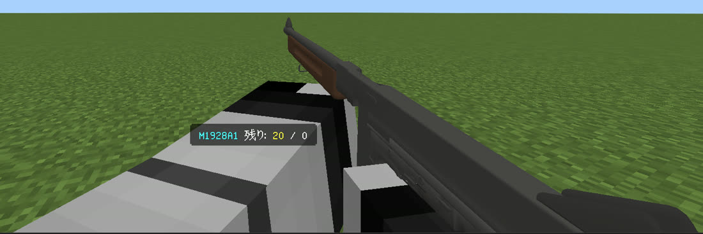
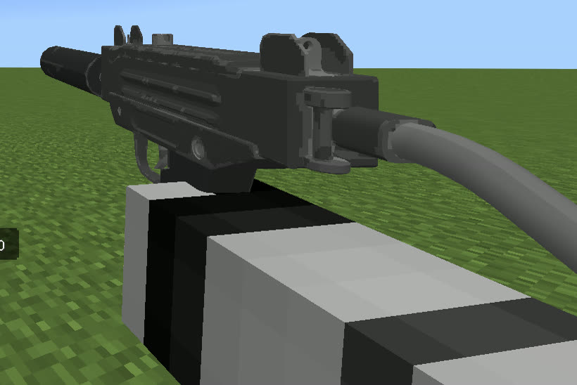
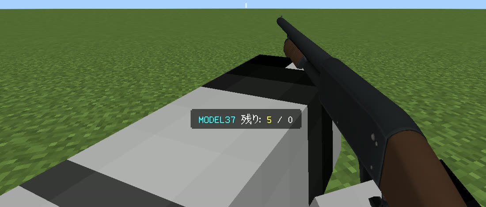
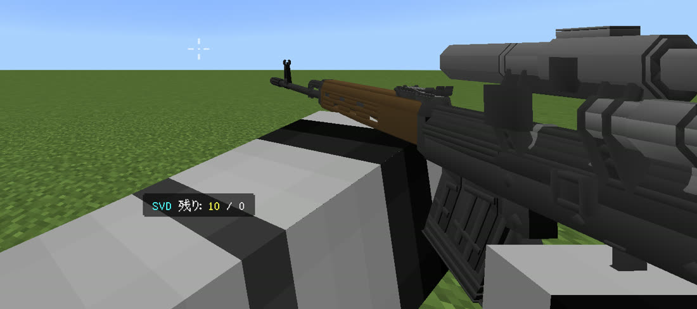
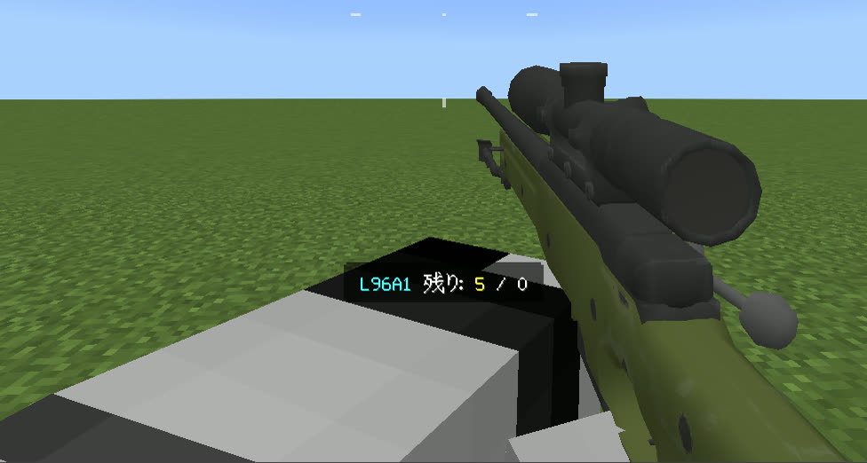
弾の通り道のすぐ近くにいる相手にも当たります。動いている相手にも当てやすいように調整してあります。
しゃがむと構えてのぞきこみます。SVDとL96A1はスコープ表示とズームになります。
弾切れでマガジンを持っていれば自動でリロード。途中で持ちかえると、やり直しになります。
フォームで銃ごとのダメージ、装弾数、拡散、camerashake、弾速などを変えられます。設定はワールドに保存されます。
石炭を使うと動く的、木炭を使うとほかのプレイヤーを的にできます。距離や速さも決められます。
しゃがんで石炭か木炭を使うと、過去20発の弾道と、撃った瞬間の的の位置を10秒間表示します。
銃の3Dモデルは、以下の作品を元に、Minecraft Bedrock向けに変換・加工（改変）したものです。制作者の皆さんに感謝します。同じ内容を、パックの中の CREDITS.txt にも入れています。
v1.0.0 — .mcaddon ファイルです。開くとMinecraftに読み込まれます。
v1.0.0（約9.5MB）